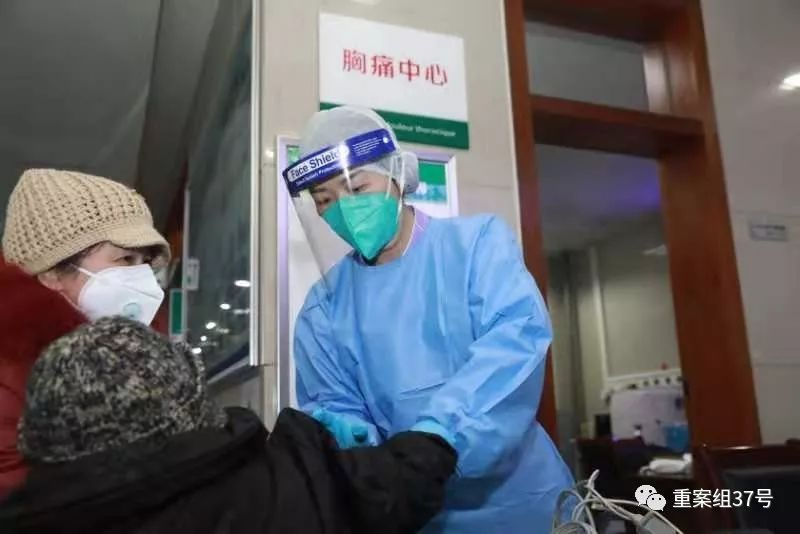
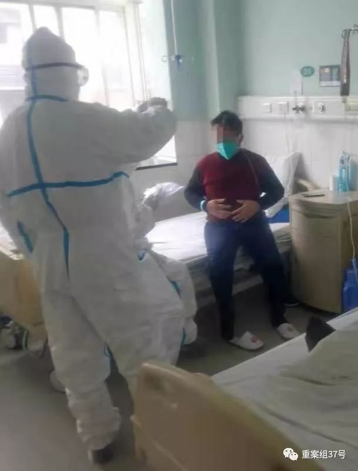

曾在华南海鲜市场打工，荆州第一例治愈者口述：我是幸运的
原文链接 备份链接 截至1月30日10点03分，中国新型冠状病毒感染肺炎确诊病例突破7000例，达到7736例，疑似病例12167例，死亡170例，治愈出院124例。 据报道，在武汉封城之前，有500万人离开了这座城市。位于武汉西南部、曾 …

“我在家族群里说，科室工作群里每天都有很多接诊信息，护士长已经连续工作48小时，还有护士生病了。选择当医生、当护士肯定是有风险，但我会做好防护。我返回岗位继续工作不是为了当英雄，但是不能做逃兵。”
全文2771字，阅读约需5.5分钟
1月28日，新京报记者从武汉大学中南医院获悉，该院急诊科护士郭琴因连续多日救护新型冠状病毒肺炎重症患者，不幸被感染。1月27日康复后，她主动要求返回岗位。
当日晚间，忙了10多个小时的郭琴告诉记者，被确诊后也害怕过，但她相信自己的同事和医疗团队。到岗后，她把自己的经历分享给患者，希望以此告诉别人，新冠病毒可以治好，“不要惊慌，大家共同努力，一切都会好起来的。”

▲武汉大学中南医院护士郭琴因工作不慎感染新型肺炎，治愈后主动重返工作岗位。通讯员 高翔 摄
━━━━━
救治患者期间被感染，隔离前给家人留“遗书”
新京报：现在身体情况怎么样？
郭琴：1月25日我的核酸检测呈阴性，1月27日再次检测，结果还是阴性，隔离观察期结束到现在，我的身体状况一切正常。
新京报：你是如何被感染的？
郭琴：我是急诊科的护士，疫情发生后，就诊的发热患者很多，我每天在急诊病房照顾重症患者，一天收治、照料的患者近百名，在病房一待就是10个小时。
后来我才知道，就是在救治新型冠状病毒患者期间，我被患者通过飞沫或因接触传染了。
新京报：感染后你的身体情况怎么样？
郭琴：1月12日22时晚上，我发烧了，体温37.8度，当晚我吃了退烧药。第二 天我开始头痛、高烧不退、四肢乏力，关节和肌肉酸痛，赶快联系医院用急 救车把我从家里拉走。经过检查被确诊患新型冠状病毒肺炎，医院安排我住 进了隔离病房。
新京报：确诊后害怕了吗？
郭琴：刚发热被急救车拉走时，我比较担心和沮丧，嘴上劝家人不要担心， 让丈夫在家里不要来看我，但还是给丈夫留了“遗言”。
“我要是死了，一定照顾好11岁的儿子，照顾好双方的老人。”
之后我就在想，这些年什么样的患者没有接触过。我大学毕业后就到中南医院当护士，做了15年了，一直在急诊科重症抢救室工作，那么多重症患者不都救过来了嘛，要相信自己同事和团队可以成功处置疫情。
还有同事给我拥抱、鼓励，说实话，我内心的担心和沮丧很快就过去了。
新京报：当时医护人员做了哪些防护？
郭琴：我们平时会穿戴蓝色隔离服和医用口罩，今年情况比较特殊，就戴了 N95口罩、护目镜，把蓝色隔离服穿在里面，最外面再穿一层白色防护服。
春冬两季是流感的高发季节，今年元旦节前后开始，到我们医院就诊的发热 病人和感染流感的病人特别多，比往年至少要多两倍，其中有一些被确诊为 新型冠状病毒感染的肺炎患者。
我们每天要接触、救治大量患者，即使做了很好的防护，但还是不能保证不 被传染。
我们家离医院有40多分钟的路，那几天忙起来每天也就睡5个小时。睡眠不足，饭不能按时吃，免疫力也有所下降。

▲此前，新型肺炎患者胡先生在武汉大学中南医院接受治疗。通讯员 高翔 摄
━━━━━
为省床位申请回家隔离
新京报：感染后是怎么治疗的？
郭琴：在医院隔离当天，我服用和输抗病毒、抗病菌的药物，第二天退烧了 ，身体轻松许多。
当时每天都有新增的感染患者，医院床位不够，我就申请回家隔离治疗。
在家那几天我坚持吃达菲（奥司他韦），是抗流感的药。再者就是肉和鸡蛋 ，补充蛋白，吃新鲜水果蔬菜，让身体保持一个放松的状态。
新京报：在家中隔离治疗会影响家人吗？
郭琴：那几天我住在我妈家，自己住一间房，我一直戴着口罩，除了爸妈送饭，平时房门不打开，偶尔开窗透透风。我被送去医院当天，家里人都做了 核酸检测，没有感染。
新京报：隔离治疗期是如何度过的？
郭琴：之前工作太忙太累，隔离这几天刚好休息下，想想接下来的工作计划 。还有同事和领导给我送花、送书，在家看看医疗方面的书籍，补充些预防 、治疗流感的知识，过得挺充实。
新京报：为什么康复后就回到岗位呢？
郭琴：我住院的第一天晚上，本该是我和另一位同事值夜班，因为患者多，外面的监护仪器一直响，响声代表着一直有患者找医护人员帮忙，而我没有办法帮忙，听着同事的脚步声跑来跑去忙个没停，挺心疼的。
我们急诊一共48位医护人员，重症抢救有10位医护人员，那段时间都是3班倒，还得加班，都挺疲惫的。
住院第二天，我退烧了，本来想继续上班，单位说不行，还要继续治疗、隔离观察。
康复后，我身体状况好了，我是护士又是党员，就想马上重返岗位，为同事分担压力。
1月28日，专家评估我的身体状况良好，我就回到单位继续救治患者了。

▲武汉大学中南医院护士郭琴因工作不慎感染新型肺炎，治愈后主动重返工作岗位。通讯员 高翔 摄
━━━━━
“不为当英雄，也不想做逃兵”
新京报：家人支持你的决定吗？
郭琴：他们劝我不要继续工作，说的很委婉。家族群里有很多亲戚劝我多休息几天，说我上有老下有小，好好考虑下。
新京报：你是怎么回应他们的？
郭琴：我丈夫是老师，非常支持我的决定，孩子今年上6年级，也让我加油。
我在家族群里说，科室工作群里每天都有很多接诊信息，护士长已经连续工作48小时，还有护士生病了。选择当医生、当护士肯定是有风险，但我会做好防护。
我返回岗位继续工作不是为了当英雄，但是不能做逃兵。
说了这些就没有人再说什么了，大家都能理解。
新京报：重返医院后觉得有什么变化？
郭琴：医院就诊病人明显减少了，欣慰的是返岗第一天就得知，同事们两周前救治的一名新型冠状病毒肺炎患者也康复出院了。
这个患者是我们医院最初确诊的新型冠状病毒肺炎患者，到院后持续高烧不退，呼吸频率特别快，一度昏迷，好在救治及时，通过ECMO技术成功救治。
但是只有重症患者可以通过ECMO救治，一般患者用不到这个。
注：公开资料显示，ECMO技术原理是将体内的静脉血引出体外，经过特殊材 质人工心肺旁路氧合后注入病人动脉或静脉系统，起到部分心肺替代作用。
新京报：现在医院物资储备够用吗？
郭琴：刚开始口罩、防护服等医护用品储备充足，现在还够用，但还是比较紧张。
口罩要4个小时换一个，喝水、上厕所防护服暴露了，就需要换一次。我们有护士为了节约防护服，基本不喝水不吃饭，也不去厕所，这样对自己身体不好。
新京报：作为一名感染者，又是一名护士，有什么想对大家说的？
郭琴：大家一定要相信医生，身体不适立即就医，现在国家卫健委印发新型冠状病毒感染的肺炎诊疗方案（试行第四版），对这个病的介绍很详细，预防和治疗说的也很详细了，大家可以看一看。
要注意的是，不要到人员密集的地方去，出门一定要戴口罩，口罩不要反复 使用。这个病没那么可怕，可以治得好，大家不必恐慌。
新京报记者 刘名洋 编辑 李明 值班编辑 王洪春 潘佳锟 校对 郭利
点击下图进入”全国新型冠状病毒感染肺炎实时地图“

*值班编辑 花木南*


本文部分内容首发自新京报公号“重案组37号”
未经新京报书面授权不得转载使用
欢迎朋友圈分享


原文链接 备份链接 截至1月30日10点03分，中国新型冠状病毒感染肺炎确诊病例突破7000例，达到7736例，疑似病例12167例，死亡170例，治愈出院124例。 据报道，在武汉封城之前，有500万人离开了这座城市。位于武汉西南部、曾 …
原文链接 备份链接 2019年3月，武汉协和医院急诊科副主任孙鹏调到该医院的西院，负责急诊科的工作。12月底华南海鲜市场冠状病毒事发，西院开设发热门诊，这两个门诊的工作都落到他头上。今年1月26日上午，孙鹏告诉记者，医院刚接到通知，他们 …
原文链接 备份链接 武汉急诊科护士被感染 除夕夜独自居家隔离未告诉亲人病情丨武汉肺炎亲历 2020-01-25 22:47 作者：晏国文 曹学平 来源：中国经营网 本报记者 晏国文 曹学平 北京报道 “护士不好当，急诊的护士更不好当，武汉 …
原文链接 备份链接 根据国家卫健委的通报，截至1月23日零点，共统计到国内新型冠状病毒感染的肺炎确诊病例571例，其中超过400例来自湖北。死亡17例，均来自湖北。此刻的武汉面临以下问题：试剂盒数量不够、确诊艰难、床位短缺、高度疑似患者 …
原文链接 备份链接 其他科室要尽量把医用口罩和防护服留给隔离病房的医护人员使用 2020年1月22日，在湖北省政府首场新型冠状病毒感染肺炎疫情防控工作新闻发布会上公布，新型冠状病毒感染的肺炎已致湖北17人死亡。图/新华 文 |《财经》 …